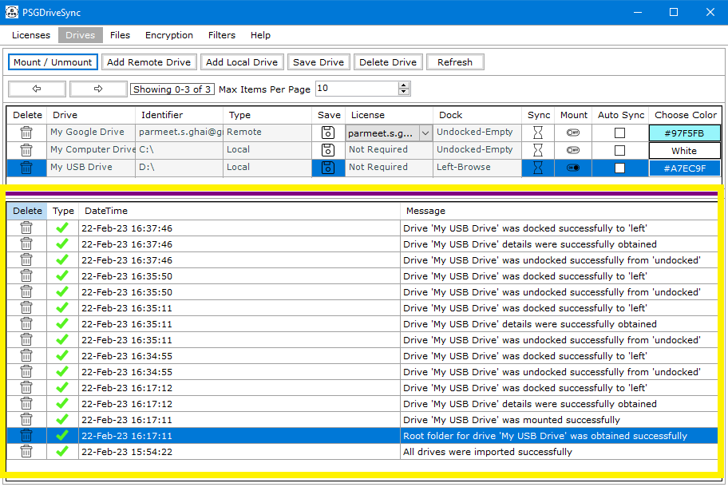
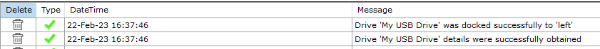
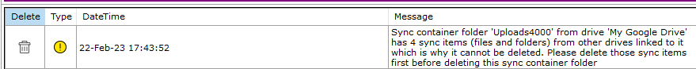
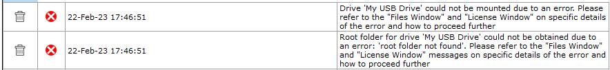

|  |
Every tab or section of the application provides a system message window at the bottom of the section. The system message window is designed to keep user aware of any error messages related to current operation or in general the status of the operation that they initiated. It can be used to diagnose and resolve some of the issues that you might face with the application. There are three types of messages that the system messages window shows |
|
1 |
Information Messages - these messages show up with a green check icon and indicates that the current operation has completed successfully. |
 |
|
2 |
Warning Messages - these messages show up with a yellow exclamation mark icon and indicates that the current operation could not be completed due to an incorrect setting or something else that is not a major problem and it could complete successfully if you follow the suggestion mentioned in the warning. |
 |
|
3 |
Error Messages - these messages show up with a red cross icon and indicates that the current operation has failed. |
 |